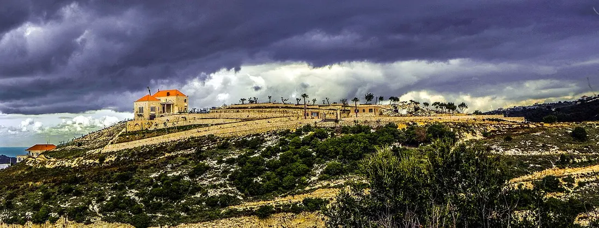

1. Choose your intention
Before you begin, clearly name what you are asking for - healing, guidance, reconciliation, or any need weighing on your heart.
Short answer: The Saint Charbel novena is nine consecutive days of prayer, each day with its own prayer text and a closing Our Father, Hail Mary, and Glory Be. A possible time is July 15 to 23, ending on the eve of the July 24 feast, though it can be prayed at any time of year. The prayers below are the traditional ones published by the Monastery of Saint Maron in Annaya.
The complete nine-day novena to Saint Charbel, day by day, with the traditional prayers published by the Monastery of Saint Maron in Annaya, and a simple guide on how and when to pray it.

A novena is a devotion of prayers repeated over nine consecutive days. The word comes from the Latin novem, meaning nine. The tradition reaches back to the earliest days of the Church, when the apostles and the Blessed Virgin Mary spent nine days in continuous prayer between Christ's Ascension and the descent of the Holy Spirit at Pentecost - the original nine-day vigil that became the model for every novena since.
The novena to Saint Charbel draws on that ancient practice and channels it through the intercession of a saint whose life was defined by silence, sacrifice, and total surrender to God. Each of the nine days carries its own prayer, and the devotion deepens as the days build.
No special preparation is needed beyond a sincere heart and the perseverance to pray for nine days in a row.
Before you begin, clearly name what you are asking for - healing, guidance, reconciliation, or any need weighing on your heart.
Saint Charbel spent twenty-three years in the silence of a hermitage. Honor his spirit with a still, undisturbed space for your prayer.
In the name of the Father, and of the Son, and of the Holy Spirit. Amen. Then state your intention, aloud or silently.
Each of the nine days below has its own prayer text. Close each day with one Our Father, one Hail Mary, and one Glory Be.
Repeat for nine consecutive days, ideally at the same time each day. If you miss a day, continue with the next day when you can. This is a devotion, not a test of perfect attendance.
A novena is devotional tradition, not a transaction. No prayer mechanically guarantees healing or any other outcome: prayer asks, and God remains free.
A possible time is the feast novena: the day-by-day prayers over the nine days before the feast - July 15 to July 23 for the July 24 feast - ending on the eve of the feast of Saint Charbel. The feast falls on the third Sunday of July in the Maronite liturgical calendar and is observed widely on July 24. On the feast itself, attend Mass if you can and pray the intercession prayer. The novena may also be prayed at any time of year, whenever a need weighs on your heart. Some pilgrims time a novena to end on the 22nd of the month, the monthly day of pilgrimage at Annaya.
The traditional day-by-day text published by the Monastery of Saint Maron, Annaya (Deir Annaya). Close each day with one Our Father, one Hail Mary, and one Glory Be.
Oh, Miraculous Saint Charbel, from whose immaculate body, which overpowers corruption, emanates the scent of heaven, come to my rescue and grant me from God the grace which I need (name the grace). Amen.
Oh Lord, who has bestowed on Saint Charbel the grace of faith, I plead to you to grant me through his intercession that divine grace to live according to your commandments and Bible. The glory is yours till the end. Amen.
Oh, Saint Charbel, Hero of monastic life, who experienced suffering, and whom Lord Jesus made of a bright beacon, I resort to you and ask through your intercession the grace (name the grace). I confide in you. Amen.
Oh, God of complete benevolence, who honored Saint Charbel by giving him the grace to perform miracles, have mercy on me and grant me what I ask from you through his intercession. The glory is yours till the end. Amen.
Oh, Saint Charbel, the amiable, who shines like a bright star in the church sky, brighten my way, and fortify my hope. From you I ask for the grace (name the grace). Ask for it from Jesus the crucified whom you perpetually worship. Amen.
Oh, Lord Jesus, who sanctified Saint Charbel and helped him to carry his cross, give me the courage to bear life's difficulties with patience and submission to your divine will through Saint Charbel's intercession, to you is gratefulness forever. Amen.
Oh, Saint Charbel, the affectionate, I resort to you. My confidence in you fills my heart. With the power of your intercession with God, I am waiting for the Grace which I ask from you (name the grace). Show me your affection once more.
Oh, God, you, who granted Saint Charbel the grace of your resemblance, grant me the help to grow in the Christian virtues and have mercy on me to be able to praise you till the end. Amen.
Oh, Saint Charbel, loved by God, enlighten me, help me and teach me how to please God. Hurry to my rescue. Oh affectionate Father; I beg of you to ask God for this grace (name the grace). Amen.
Oh, God hear my demand through Saint Charbel's intercession. Save my poor heart and give me peace. Calm the troubles of my soul. To be glory you till the end. Amen.
Oh, Saint Charbel, all powerful intercessor, I ask you to fulfill the grace which I need (name the grace). A single word from you to Jesus is enough to forgive me, to have mercy on me and to grant me my wish.
Oh, God, who chose Saint Charbel to defend us before your divine power, grant me through his intercession this grace (name the grace) to glorify you with him till the end. Amen.
Oh, Saint Charbel, loved by everyone, helper of the needy; I have firm hope in your intercession before God. Fulfill this grace for me (name the grace).
Oh, God, my numerous sins hinder your grace to reach me. Grant me the grace to repent. Answer me through Saint Charbel's intercession. Return the joy to my sad heart and grant me my demand. You, the embodiment of graces, glory and gratefulness be to you. Amen.
Oh, Saint Charbel, whenever I see you kneeling down on the cane mat, fasting, abstaining and absorbed in calling God, my hope and my faith in you augment. I beg you to help me to receive the grace that I am asking for (name the grace).
Oh, Jesus, the most peaceful, you who has raised your beloved Charbel to Christian perfection, I solemnly ask you to grant me the grace to spend the rest of my life according to your demand. I love you, oh God, my savior. Amen.
Oh, Saint Charbel, here I am at the end of the Novena. My heart gets nourished when I speak to you. I have great hope that I will obtain from Jesus the grace I asked for through your intercession. I repent, and I promise that I will never ever fall into sin. I ask you to fulfill my demand (name the demand).
Oh, Lord, you listened to Saint Charbel's prayers, and you fulfilled the grace of being with you, have mercy on me in my moment of distress. Save me from malice which I cannot bear. Glory and gratefulness be to you till the end. Amen.
Nine consecutive days - the word novena comes from the Latin novem, meaning nine. Each of the nine days has its own prayer text, and every day closes with one Our Father, one Hail Mary, and one Glory Be.
A possible time is the feast novena: July 15 to July 23, ending on the eve of the July 24 feast of Saint Charbel. The novena may also be prayed at any time of year, and some pilgrims time it to end on the 22nd of the month, the monthly day of pilgrimage at Annaya.
Continue with the next day when you can. Devotional advice may vary; missing a day does not turn prayer into a failure or a guarantee of any outcome.
Name your intention, find a quiet place, begin with the Sign of the Cross, then pray that day's prayer and close with one Our Father, one Hail Mary, and one Glory Be. Repeat for nine consecutive days. No special preparation is needed beyond a sincere heart.
No. A novena is devotional tradition, not a transaction: no prayer mechanically guarantees healing or any other outcome. Prayer asks, and God remains free.